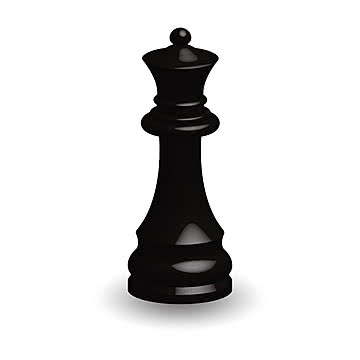

Основные фигуры
Ферзь
Ферзь может двигаться по вертикали, горизонтали и диагонали на любое расстояние.
Ладья

Ладья движется по прямым линиям — вертикалям и горизонталям.
Слон

Слон ходит только по диагонали.
Конь

Конь ходит буквой "Г": на две клетки по одной оси и на одну по другой. Он единственная фигура, которая может перепрыгивать через другие.
Пешка

Пешка ходит на одну клетку вперёд, а бьёт по диагонали. На первом ходе может пойти на две клетки.
Подробнее можно узнать в Википедии.